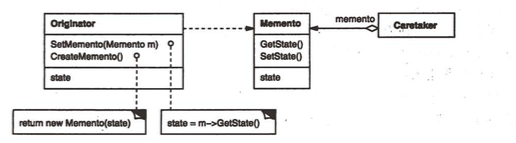
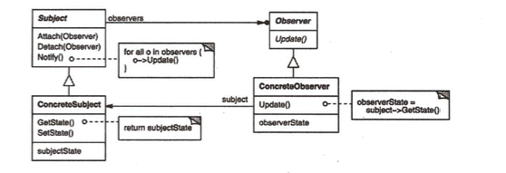
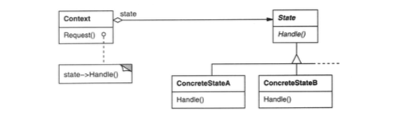
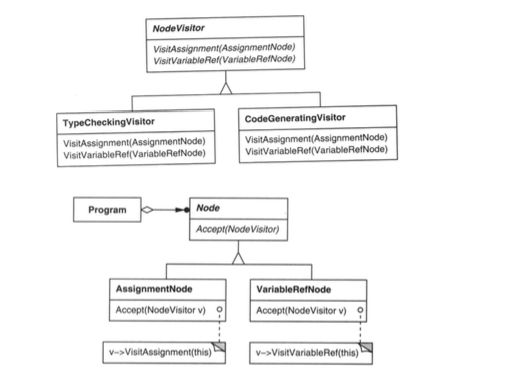

职责链模式
当客户提交一个请求时，请求沿链传递直至有一个ConcreteHandler对象负责处理它。
典型的例子是UI系统的事件冒泡系统。
命令模式
- 命令模式允许请求的一方和接收的一方独立开来，使得请求的一方不必知道接收请求的一方的接口，更不必知道请求是怎么被接收，以及操作是否被执行、何时被执行，以及是怎么被执行的。
- 命令模式使请求本身成为一个对象，这个对象和其他对象一样可以被存储和传递。
- 命令模式的关键在于引入了抽象命令接口，且发送者针对抽象命令接口编程，只有实现了抽象命令接口的具体命令才能与接收者相关联。

最典型的例子是yii2框架里的Action。
解释器模式
(略)
迭代器模式
- 它支持以不同方式遍历一个集合。
- 简化了集合的接口
- 在同一个集合上，可以同时有多个遍历。
中介者模式
用一个中介对象来封装一系列的对象交互。中介者是的各对象不需要显示地互相引用，从而使其耦合松散，而且可以独立的改变他们之间的交互。
典型的例子：cocos2d-x 中的 cc::Director。
iOS中的Controller其实也是一个中介者。
备忘录模式
在不破坏封装性的前提下，捕获一个对象的内部状态，并在该独享之外保存这个状态，以便以后将对象恢复到之前的状态。

观察者模式
定义对象间的一种一对多的依赖关系，当一个对象的状态发生改变时，所有依赖于它的对象都得到通知并自动更新。

典型的例子是常见的addEventListener()以及MessageCenter.
状态模式
允许一个对象在其内部状态改变时改变它的行为。对象看起来似乎修改了它的类。
在下面的两种情况下均可使用State模式:
- 一个对象的行为取决于它的状态,并且它必须在运行时刻根据状态改变它的行为。
- 一个操作中含有庞大的多分支的条件语句,且这些分支依赖于该对象的状态。这个状
态通常用一个或多个枚举常量表示。通常,有多个操作包含这一相同的条件结构。State模式将每一个条件分支放入一个独立的类中。这使得你可以根据对象自身的情况将对象的状态作为一个对象,这一对象可以不依赖于其他对象而独立变化。

策略模式
定义一系列的算法，把他们一个个封装起来，并且使他们可以相互替换。本模式使得算法可独立于使用它的客户端而变化。
一个典型的例子是cocos2d-x中的Render。
模板方法模式
- 定义一个操作中的算法骨架，而将一些步骤延迟到子类中。TemplateMethod使得子类可以不改变一个算法的结构即可重定义改算法的某些特定步骤。
- 一个模板方法用一些抽象的操作定义一个算法，而子类将重定义这些操作以提供具体的行为。
访问者模式
表示一个作用于某对象结构中的各元素的操作。他使你可以在不改变各元素的类的前提下定义作用于这些元素的新操作。
